Home / Gallery
PortfolioGallery
Selected photographs from across the group, grouped by the company they belong to.
DKT Consultancy & Management
DKT Consultancy & Management

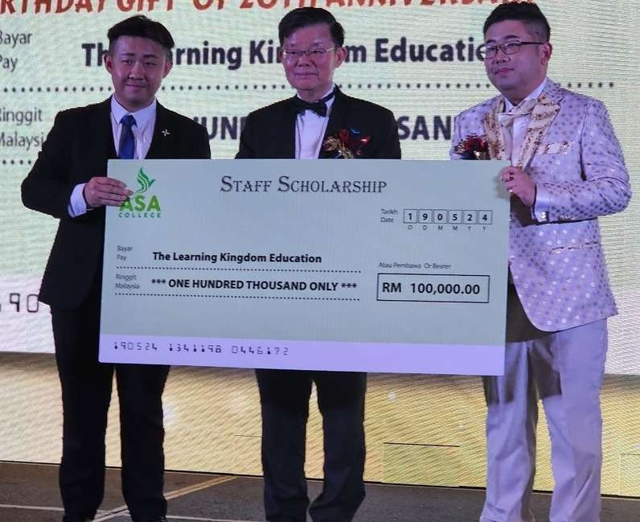

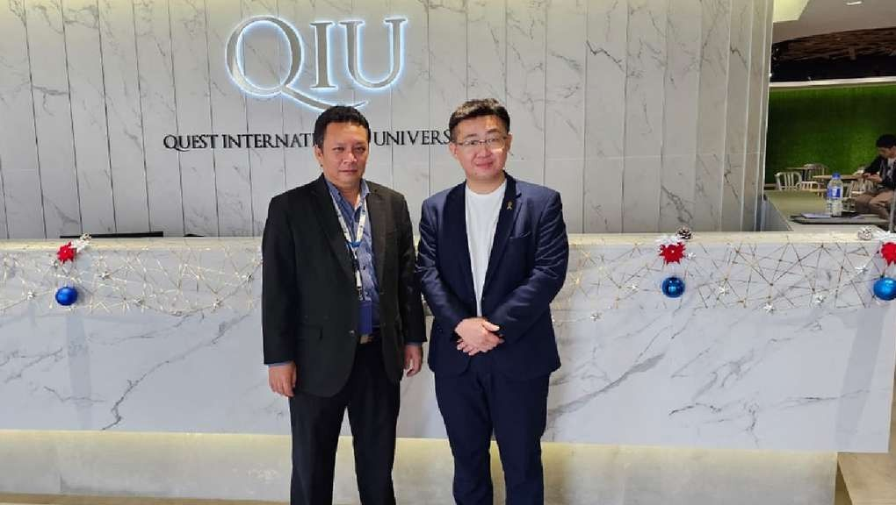

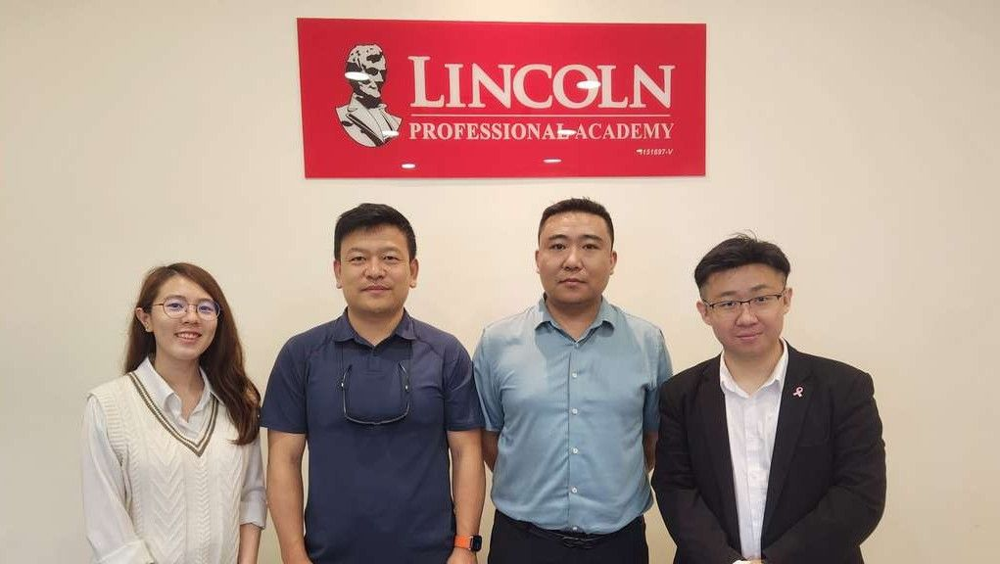

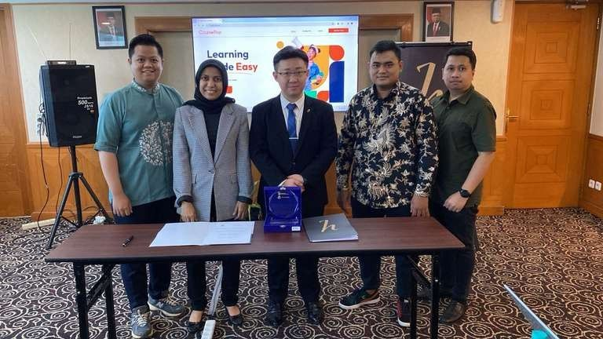

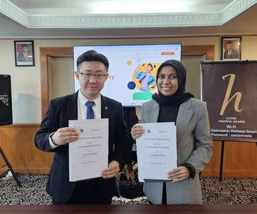

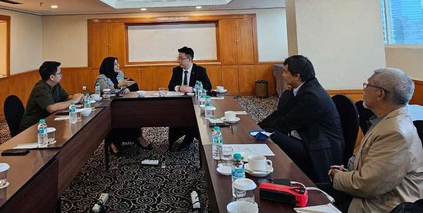

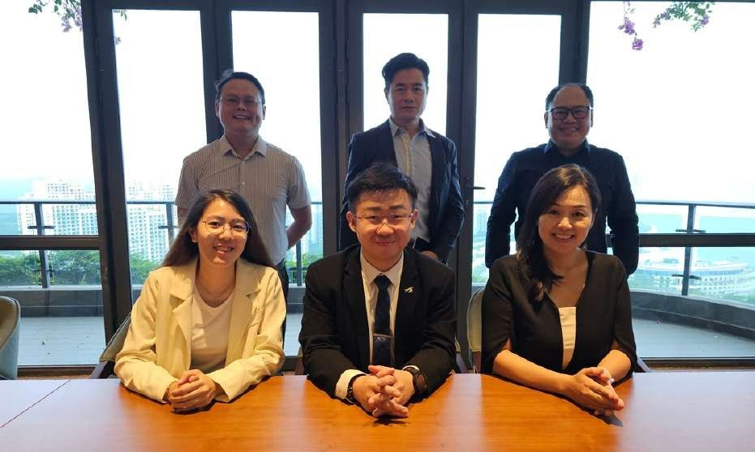

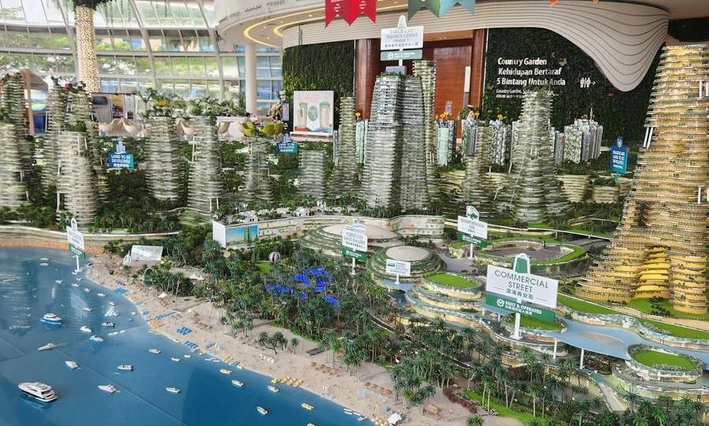
Carbon Ecology Research & Development Sdn Bhd
Carbon Ecology

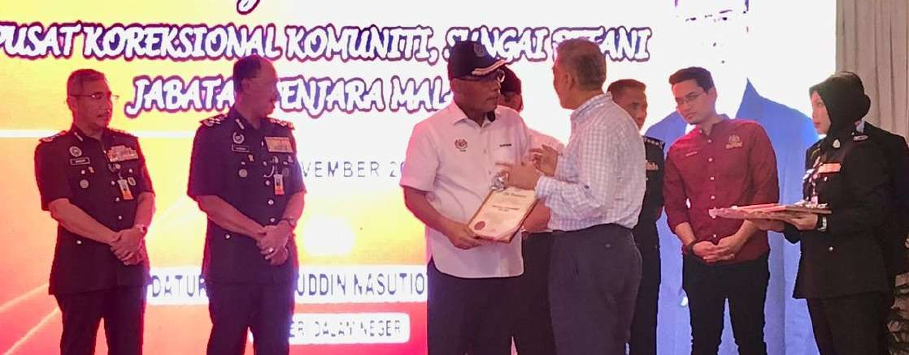

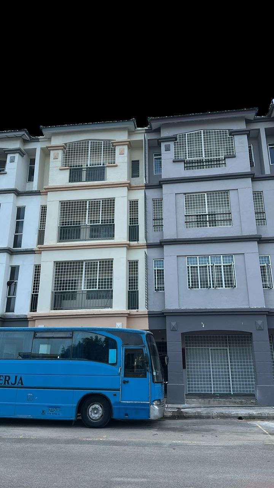

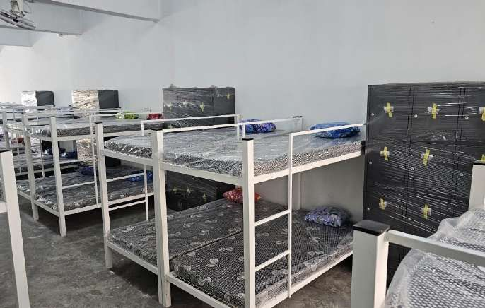

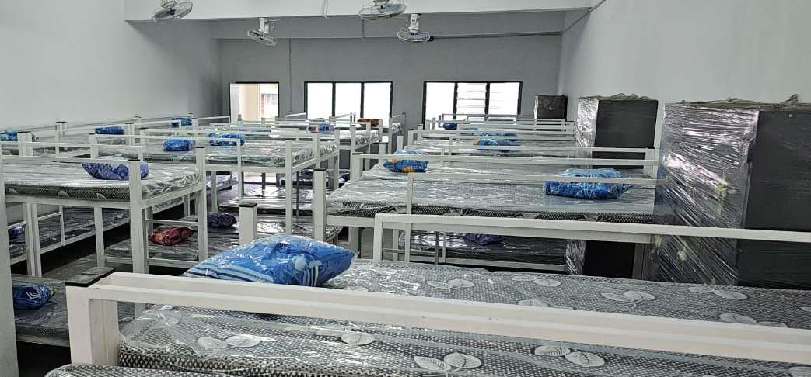

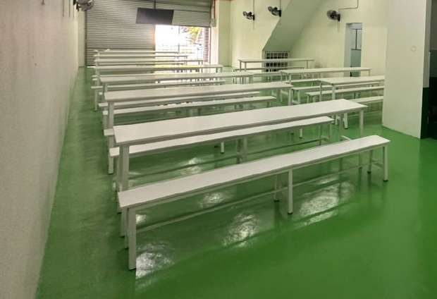

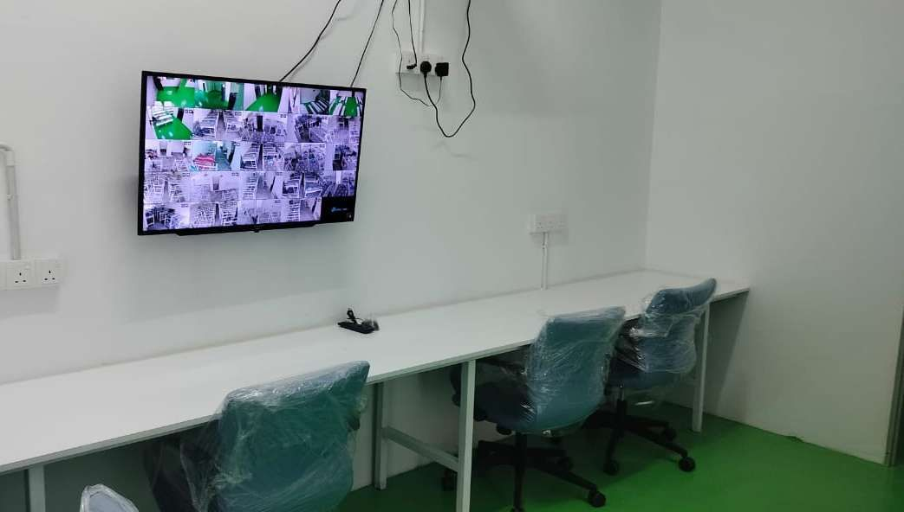

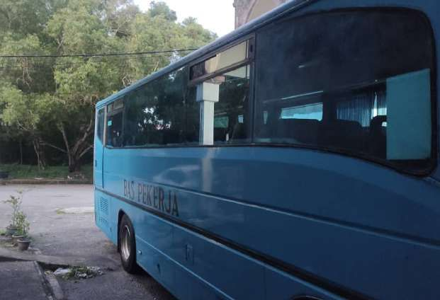

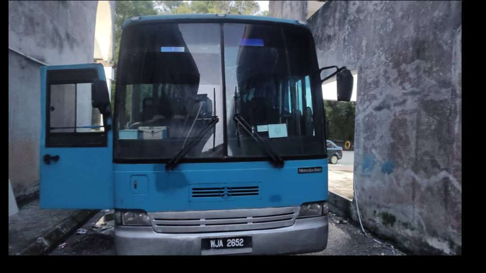
QuickPro Solution Sdn Bhd